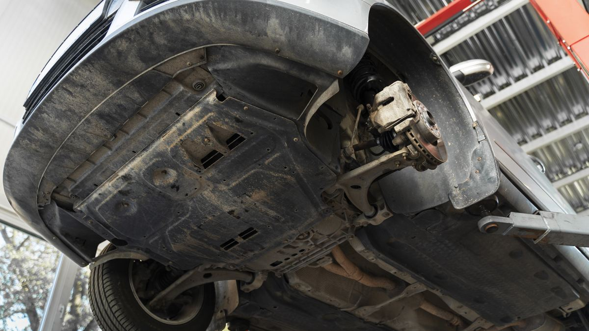

Filtr DPF · 4 min czytania
Regeneracja czy czyszczenie DPF – czym się różnią?
Czyszczenie DPF i regeneracja filtra to nie to samo. Wyjaśniamy, co usuwa każdy z tych zabiegów, kiedy który ma sens i dlaczego bez znalezienia przyczyny oba pomogą tylko na chwilę.

Czyszczenie DPF i regeneracja filtra często są wrzucane do jednego worka, a to dwa różne zabiegi. Regeneracja wypala sadzę, która zbiera się w filtrze na bieżąco. Czyszczenie usuwa także popiół, którego żadne wypalanie nie ruszy. Wybór właściwej metody zależy od tego, co faktycznie zalega w filtrze – i właśnie to powinna pokazać diagnostyka.
Sadza i popiół – dwa różne problemy
Filtr cząstek stałych zatrzymuje sadzę ze spalin silnika Diesla. Sadza jest palna, więc da się ją wypalić w wysokiej temperaturze. Po jej spaleniu zostaje jednak niewielka ilość popiołu, pochodzącego głównie z dodatków w oleju silnikowym. Popiół się nie spala – powoli wypełnia kanaliki filtra, kilometr po kilometrze. Dlatego:
- nadmiar sadzy zwykle rozwiązuje regeneracja,
- nadmiar popiołu wymaga czyszczenia filtra, a gdy wkład jest uszkodzony – jego wymiany.
Regeneracja DPF – trzy odmiany
Pasywna
Zachodzi samoczynnie podczas dłuższej jazdy, gdy spaliny są gorące. W wielu układach pomaga w tym katalizator utleniający umieszczony przed filtrem, dzięki któremu sadza utlenia się w niższej temperaturze niż zwykle. Kierowca zwykle nawet tego nie zauważa.
Aktywna
Uruchamia ją sterownik silnika, gdy uzna, że w filtrze jest za dużo sadzy. Zmienia wtedy parametry pracy silnika, by podnieść temperaturę spalin – do szybkiego wypalenia sadzy potrzeba zwykle około 600°C. Wymaga to kilkunastu minut stabilnej jazdy, a w mieście często nie ma na to szans. W części aut regenerację ułatwia dodatkowy płyn dozowany do paliwa z osobnego zbiornika. Gdy aktywna regeneracja wielokrotnie się nie udaje, zapala się kontrolka – co wtedy robić, opisujemy w poradniku świeci się kontrolka DPF.
Serwisowa (wymuszona)
Wykonuje się ją testerem diagnostycznym, w kontrolowanych warunkach i zgodnie z procedurą producenta. Ma sens, gdy filtr jest sprawny, a w środku zalega głównie sadza – np. po okresie jazdy wyłącznie po mieście. Przed rozpoczęciem trzeba sprawdzić m.in. poziom i stan oleju, odczyty czujników i stopień zapełnienia. Przy zbyt dużej ilości sadzy wypalanie może przegrzać i uszkodzić wkład, dlatego nie jest to zabieg „na ślepo”.
Czyszczenie DPF – na czym polega
Czyszczenie DPF najczęściej wymaga demontażu filtra z auta. Wkład jest płukany specjalnymi środkami i przedmuchiwany, by usunąć z kanalików popiół i resztki sadzy, a następnie suszony i sprawdzany pod kątem przepływu. Metody różnią się w zależności od warsztatu i urządzeń, ale cel jest ten sam: przywrócić przepustowość filtra bez naruszenia jego struktury.
Czyszczenie warto rozważyć zwłaszcza wtedy, gdy:
- regeneracja serwisowa nie przyniosła efektu albo kontrolka wróciła po kilku dniach,
- odczyt pokazuje dużą ilość popiołu lub wysoką różnicę ciśnień mimo świeżo wypalonej sadzy,
- auto ma duży przebieg, a filtr nigdy nie był czyszczony ani wymieniany,
- filtr zapchał się przez usterkę silnika, która została już usunięta.
Na rynku są też preparaty podawane do filtra bez demontażu. Mogą pomóc przy nadmiarze sadzy, ale z popiołem radzą sobie znacznie słabiej niż czyszczenie zdemontowanego wkładu.
Po czyszczeniu lub wymianie filtra w wielu autach trzeba zapisać tę informację w sterowniku silnika za pomocą testera. Bez tego komputer nadal „myśli”, że filtr jest pełny, i może dalej sygnalizować problem.
Regeneracja czy czyszczenie DPF – porównanie
| Cecha | Regeneracja serwisowa | Czyszczenie DPF |
|---|---|---|
| Co usuwa | Sadzę | Popiół i sadzę |
| Demontaż filtra | Nie | Zwykle tak |
| Kiedy ma sens | Filtr sprawny, sadza nie wypala się w codziennej jeździe | Dużo popiołu, duży przebieg, regeneracja nie przynosi efektu |
| Na co uważać | Zbyt duże zapełnienie, zły stan oleju, błędne odczyty czujników | Prowizoryczne metody, np. myjka ciśnieniowa, mogą uszkodzić wkład |
| Po zabiegu | Kontrola parametrów, usunięcie przyczyny | Wpis w sterowniku, kontrola parametrów, usunięcie przyczyny |
Zanim zdecydujesz się na zabieg, zapytaj o wynik diagnostyki: ile jest w filtrze sadzy, ile popiołu i czy czujniki działają poprawnie. Te dane najlepiej pokazują, czy wystarczy regeneracja, czy potrzebne jest czyszczenie.
Kiedy potrzebna jest wymiana filtra
Ani regeneracja, ani czyszczenie nie pomogą, gdy wkład jest pęknięty lub nadtopiony – najczęściej po niekontrolowanym wypalaniu bardzo dużej ilości sadzy. Zniszczyć go może też olej przedostający się do spalin, np. przez zużytą turbosprężarkę, albo płyn chłodniczy, np. z nieszczelnej chłodnicy układu EGR. Wtedy filtr trzeba wymienić, a przyczynę usunąć, zanim nowy wkład podzieli los starego.
Wycięcie filtra to nie „trzecia droga”. Auto bez filtra przewidzianego przez producenta nie spełnia warunków technicznych, co grozi m.in. zatrzymaniem dowodu rejestracyjnego i kłopotami na badaniu technicznym. Nie usuwamy filtrów – zajmujemy się ich diagnostyką, regeneracją i czyszczeniem.
Bez usunięcia przyczyny problem wróci
Zapchany filtr bywa skutkiem, a nie przyczyną. Jeśli silnik produkuje za dużo sadzy przez cieknące wtryskiwacze, niesprawny zawór EGR czy nieszczelny dolot, albo sterownik dostaje błędne dane z czujnika różnicy ciśnień DPF, nawet starannie wyczyszczony filtr szybko zapcha się znowu. Dlatego przed decyzją zawsze warto zrobić pełną diagnostykę. O nawykach, które przedłużają życie filtra, piszemy w poradniku filtr DPF – jak dbać.
Diagnostykę, regenerację serwisową i czyszczenie filtrów wykonujemy po wcześniejszym podaniu ceny przez telefon – szczegóły znajdziesz na stronie filtry DPF. Pomagamy kierowcom w Kielcach i okolicznych miejscowościach, 24 godziny na dobę. Zadzwoń: 668 292 270.